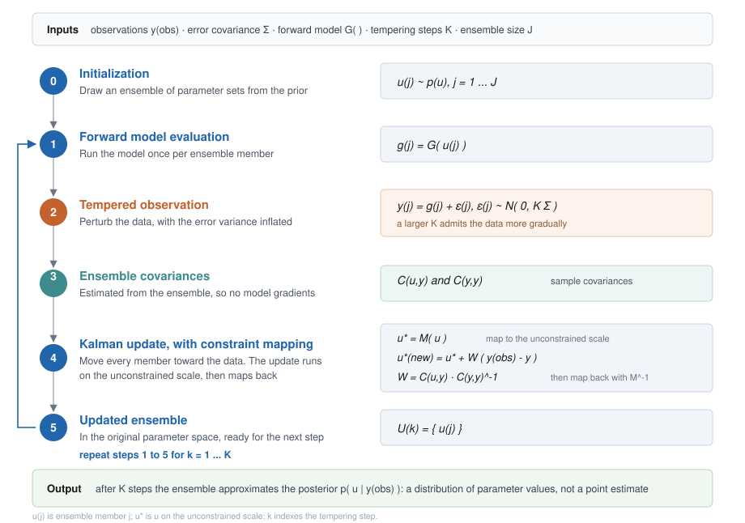
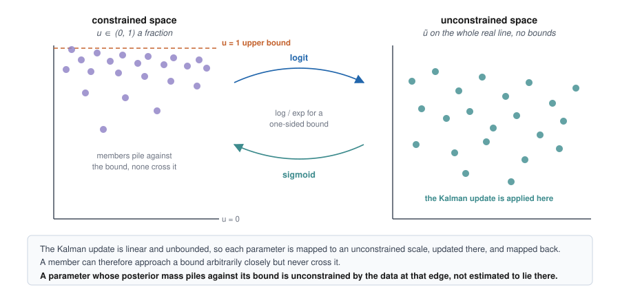
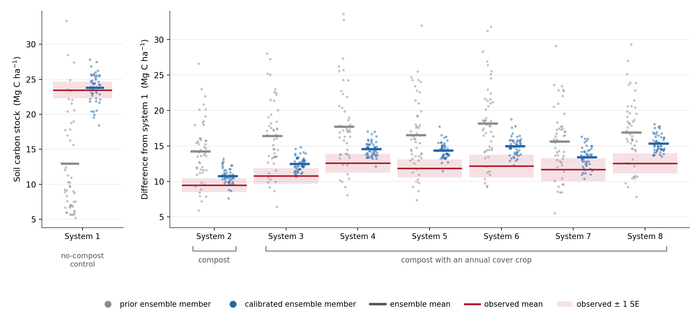
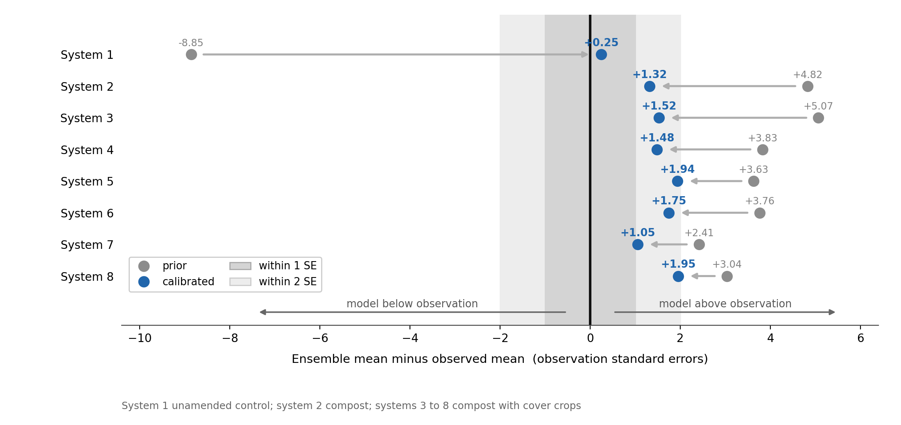
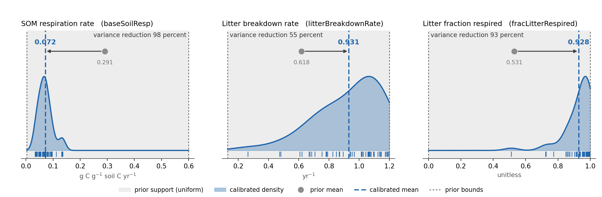
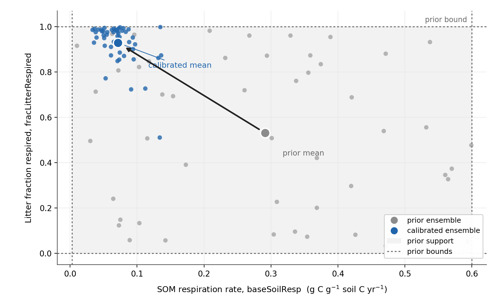
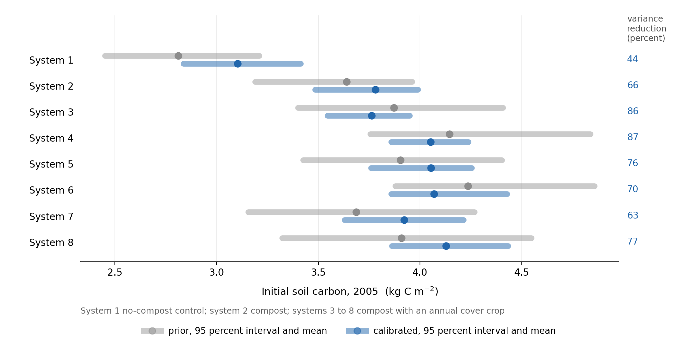
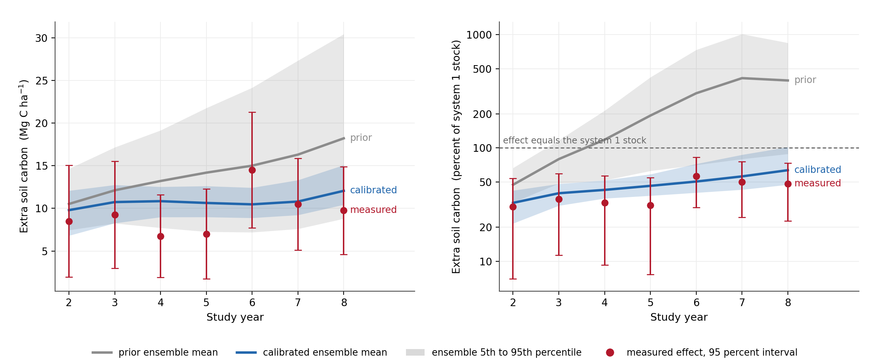
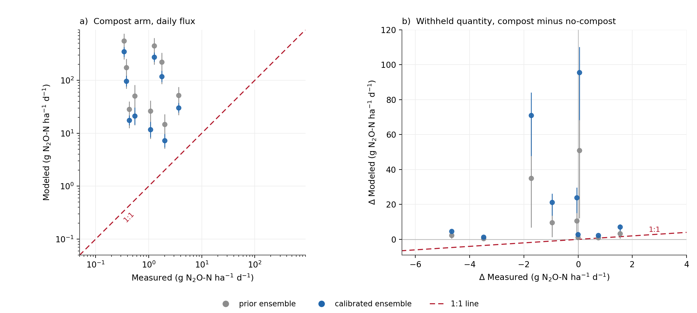

Site-Level Soil Carbon Parameter Calibration
This report documents the calibration of SIPNET soil biogeochemistry parameters against soil organic carbon observations from a single long-term field trial, and what that calibration establishes about the model. The parameters estimated here are the values carried into the statewide inventory runs.
Scope
Three soil process parameters and eight per-treatment initial soil carbon states were estimated against the soil carbon record of the Salinas organic cropping systems trial over 2005 to 2011 (White et al., 2020a, 2020b). Nitrous oxide from the Modesto almond trial was withheld from the estimation, simulated, and scored as an independent evaluation.
Sensitivity and uncertainty analyses are reported separately. Methane, and sites other than the two named here, are outside this report.
Calibration approach
Calibration is treated as a Bayesian inverse problem: estimate the parameter values, with their uncertainty, that are consistent with the measurements given prior knowledge of those parameters.
The estimator is tempered ensemble Kalman inversion (Iglesias et al., 2013). It requires no model gradients, so SIPNET is used as released (Longfritz et al., 2026). An ensemble of parameter sets is drawn from the prior, the model is run once per ensemble member, each run is compared with the measured soil carbon, and the ensemble is moved toward the observations by a Kalman-style update. The observations are admitted over several steps rather than all at once (Figure 1). The result is a distribution of parameter values rather than a single best estimate.

Ecosystem parameters are bounded: rates are positive and fractions lie between zero and one. The update is therefore not applied to the parameters directly. Each parameter is mapped to an unconstrained scale, updated there, and mapped back (Figure 2). An ensemble member can approach a bound arbitrarily closely but never cross it, which is how the bounded results below should be read.

Four choices keep the reported uncertainty conservative. The likelihood covariance is inflated across the tempering steps so that the observations are admitted gradually; a single update on a nonlinear model collapses the ensemble and understates the remaining uncertainty. The observation covariance retains the shared control term, so the seven treatment contrasts are not counted as seven independent measurements. Initial soil carbon is estimated rather than fixed, so measurement error in the baseline propagates into the result. Observation uncertainty is taken from the replicate structure of the trial rather than assumed.
The report refers to the eight cropping systems by number throughout; each is defined in the target table below. Systems 1 and 2 share the same cover crop schedule and differ only in compost, so that pair isolates the compost effect. Systems 3 to 8 add an annual cover crop as well as compost, so their differences from system 1 combine the two practices.
Observations
Calibration and evaluation observations are separate in site, cropping system and greenhouse gas. The evaluation set entered no part of the likelihood.
| set | site | system | measurement | period | contrast |
|---|---|---|---|---|---|
| calibration | Salinas | organic vegetables, eight systems | soil carbon stock, 0-30 cm | 2005-2011 | compost and cover crops against a no-compost control |
| evaluation | Modesto | almond orchard | nitrous oxide, chamber | 2018-2019 | compost against no compost |
Observation provenance, replicate structure and curation decisions are documented in the data entry report for each site.
The fitted quantity is a period mean rather than an annual trajectory. The source study reports that soil carbon levels were relatively stable from study years 2 through 8 and analyses the mean over those years for each system (White et al., 2020a). Regression of the curated stocks on year agrees: no system shows a significant trend over 2005 to 2011, at a pooled slope of −0.33 ± 0.30 Mg C ha⁻¹ yr⁻¹ (p = 0.28, systems as a factor). An annual target would ask the model to reproduce sampling variation.
Salinas soil carbon is therefore contracted to eight quantities: the no-compost control as a period mean stock, plus each of the seven amended systems as a difference from that control over the same window. A difference cancels the site effects the model is not expected to carry, and the measured contrast is what a practice effect means for inventory purposes. Uncertainty on each quantity is the standard error of the seven-year mean, computed across years with the contrasts paired by year.
| system | compost | cover crop | value (Mg C ha⁻¹) | SE |
|---|---|---|---|---|
| 1, control | none | legume-rye, every fourth year | 23.46 | 1.19 |
| 2 | 7.6 Mg ha⁻¹ per crop | legume-rye, every fourth year | +9.46 | 0.99 |
| 3 | 7.6 Mg ha⁻¹ per crop | legume-rye annually, 1x seeding rate | +10.79 | 1.11 |
| 4 | 7.6 Mg ha⁻¹ per crop | legume-rye annually | +12.57 | 1.34 |
| 5 | 7.6 Mg ha⁻¹ per crop | mustard annually | +11.86 | 1.28 |
| 6 | 7.6 Mg ha⁻¹ per crop | mustard annually, 3x seeding rate | +12.18 | 1.59 |
| 7 | 7.6 Mg ha⁻¹ per crop | cereal rye annually | +11.68 | 1.62 |
| 8 | 7.6 Mg ha⁻¹ per crop | cereal rye annually, 3x seeding rate | +12.54 | 1.44 |
The compost-only comparison reproduces the mean effect of 9.4 Mg C ha⁻¹ published for the same trial (White et al., 2020a), which is a reproduction check on the curation of the calibration target rather than an independent one: both use the same underlying dataset.
Modesto nitrous oxide is contracted in the same way, to nine date-matched compost minus no-compost contrasts, and then withheld.
Estimated parameters
Parameter names follow the SIPNET parameter documentation; the SIPNET name is given in parentheses.
| parameter | prior | role |
|---|---|---|
SOM respiration rate (baseSoilResp) |
uniform (0.003, 0.6) | soil organic matter respiration rate at 0 °C and saturated soil, g C g⁻¹ soil C yr⁻¹ |
litter breakdown rate (litterBreakdownRate) |
uniform (0.13, 1.2) | rate at which litter is converted to soil or respired, yr⁻¹ |
litter fraction respired (fracLitterRespired) |
uniform (0, 1) | of the litter broken down, the fraction respired rather than transferred to the soil pool |
initial soil carbon, eight states (soilInit) |
lognormal per system | one initial stock per treatment, kg C m⁻² |
Initial soil carbon is estimated rather than fixed, one value per treatment, with a lognormal prior centred on that treatment’s 2005 measurement at that measurement’s error. The 2005 sample is a measurement rather than the truth, and fixing the model to a single draw forces a residual that the rate parameters can only absorb by moving onto their bounds.
Three parameters were held fixed rather than fitted. The temperature sensitivity of soil respiration (soilRespQ10) was set to 2.0 because it enters the same respiration term as baseSoilResp and is not separately identifiable from a single soil carbon series. The decomposition C:N scaling parameter (kCN) was set to 80 following a sweep from 2 to 1000 that gave a flat optimum. The optimum temperature of photosynthesis (psnTOpt) was set to 25 °C because the model derives its maximum photosynthetic temperature from the optimum, and a lower optimum suppresses photosynthesis within the growing season temperature range.
The ensemble comprised 50 members over three tempering steps.
Results
Fit to the calibration observations
| quantity | observed | SE | before | after | residual before | residual after |
|---|---|---|---|---|---|---|
| system 1, no-compost control | 23.46 | 1.19 | 12.91 | 23.76 | −8.85 | +0.25 |
| system 2, compost | 9.46 | 0.99 | 14.23 | 10.76 | +4.82 | +1.32 |
| system 3 | 10.79 | 1.11 | 16.40 | 12.47 | +5.07 | +1.52 |
| system 4 | 12.57 | 1.34 | 17.71 | 14.56 | +3.83 | +1.48 |
| system 5 | 11.86 | 1.28 | 16.51 | 14.34 | +3.63 | +1.94 |
| system 6 | 12.18 | 1.59 | 18.15 | 14.95 | +3.76 | +1.75 |
| system 7 | 11.68 | 1.62 | 15.60 | 13.39 | +2.41 | +1.05 |
| system 8 | 12.54 | 1.44 | 16.90 | 15.34 | +3.04 | +1.95 |
Root mean squared error falls from 5.96 to 2.04 Mg C ha⁻¹, and the same error expressed in standard errors falls from 4.80 to 1.50. The no-compost control is recovered to within a quarter of a standard error (Figure 3). The seven treatment contrasts remain above their measured values by 1.05 to 1.95 standard errors (Figure 4).


Estimated parameter values
| parameter | prior mean | calibrated mean | variance reduction | 5th to 95th percentile | upper bound | identified |
|---|---|---|---|---|---|---|
| SOM respiration rate | 0.291 | 0.072 | 98 percent | 0.037 to 0.133 | 0.6 | yes; the interval occupies 16 percent of the prior range, well clear of both bounds |
| litter breakdown rate | 0.618 | 0.931 | 55 percent | 0.538 to 1.189 | 1.2 | weakly; the interval still spans 61 percent of the prior range |
| litter fraction respired | 0.531 | 0.928 | 93 percent | 0.747 to 0.995 | 1.0 | no; 58 percent of members lie in the top 5 percent of the range |
The eight initial soil carbon states are reduced in variance by 44 to 87 percent. Taking the shift as the calibrated mean minus the 2005 anchor, in units of the prior standard deviation, five of the eight move less than 0.6, systems 7 and 8 move 1.0, and system 1 moves 1.5.

The SOM respiration rate is the estimate this calibration provides: 0.072 g C g⁻¹ soil C yr⁻¹, a 98 percent reduction in variance, with its 5th to 95th percentile occupying 16 percent of the prior range and clear of both bounds (Figure 5).
Both litter parameters moved upward, and the litter fraction respired reached the upper limit of its support: 58 percent of its members lie in the top 5 percent of the range. By the argument of Figure 2, that is a parameter the observations do not constrain at that edge rather than one estimated to lie there. It is unconstrained rather than calibrated, and should be carried forward as its prior distribution or left at the model default rather than quoted as a fitted value.
The litter breakdown rate is an intermediate case. Its mean moves from 0.618 to 0.931 and its variance falls by 55 percent, but its 5th to 95th percentile still spans 61 percent of the prior range and only 8 percent of members lie in the top 2 percent of that range. It is weakly constrained by these observations, not pinned against its bound, and should not be quoted as a fitted value either.

Figure 6 shows the two parameters together.

System 1 moves furthest (Figure 7), which is expected: it is the state the period-mean baseline stock bears on most directly.

On the absolute scale the calibrated ensemble interval overlaps the measured interval in all seven study years, and contains the measured mean in three of seven (Figure 8, left). The measured effect varies between 6.75 and 14.50 Mg C ha⁻¹ with no significant trend, at a slope of +0.50 ± 0.49 Mg C ha⁻¹ yr⁻¹. The modeled effect accumulates monotonically before calibration, from 10.5 Mg C ha⁻¹ in study year 2 to 18.2 in study year 8, a slope of +1.19. After calibration the slope falls to +0.23 and the series is no longer monotonic, running from 9.8 to 12.1. The measured points in this figure are the same Salinas record used for calibration, decomposed by year, not additional observations.
The relative panel is plotted on a logarithmic scale because the prior mean reaches 413 percent of the control stock at study year 7 (Figure 8, right). That value is a property of the prior rather than of the model: the prior range for the SOM respiration rate reaches 0.6 per year, which draws the control’s soil carbon as low as 1.1 Mg C ha⁻¹, so any ratio taken against it is large. After calibration the modeled relative effect runs from 33 to 64 percent against a measured 30 to 56 percent.
Performance diagnostics
We evaluate calibration performance using prediction-interval coverage, mean bias, root mean squared error, and measurement uncertainty. These diagnostics assess whether the calibrated ensemble remains consistent with the observations and whether the reduction in ensemble spread is accompanied by systematic error.
| diagnostic | before | after |
|---|---|---|
| observations within the 90 percent prediction interval | 8 of 8 | 3 of 8 |
| coverage | 100 percent | 37.5 percent |
| 95 percent Agresti-Coull interval on coverage | 63 to 100 percent | 13 to 70 percent |
| mean bias (Mg C ha⁻¹) | +2.98 | +1.88 |
| root mean squared error (Mg C ha⁻¹) | 5.96 | 2.04 |
| pooled measurement uncertainty (Mg C ha⁻¹) | 1.34 | 1.34 |
| absolute bias below pooled measurement uncertainty | no | no |
The prior covers all eight observations, but that reflects a prior wide enough to contain any outcome rather than a model that predicts well. The calibrated ensemble is narrower and its root mean squared error is a third of the prior value, but five of eight observations now fall outside the prediction interval and the mean bias of +1.88 Mg C ha⁻¹ remains larger than the pooled measurement uncertainty of 1.34. The contraction in spread is therefore accompanied by a systematic error that no choice of these three parameters removes; its source is the one-signed residual described below.
Independent evaluation
The nine Modesto nitrous oxide contrasts were withheld from the likelihood. No nitrogen parameter was estimated in this calibration, so this comparison measures what is currently unconstrained. The soil carbon parameters do affect the modeled flux, through the soil carbon and nitrogen pools, but no observation in the likelihood bears on the nitrogen cycle directly.
Averaged over the nine measured dates the modeled compost arm emits 103 g N₂O-N ha⁻¹ d⁻¹ against a measured 1.3, approximately eighty times the measurement (Figure 9, a). Calibrating soil carbon moved that value from 174 to 103 g N₂O-N ha⁻¹ d⁻¹, so the difference is a structural discrepancy rather than a calibration residual.

Evaluated by the metrics used for soil carbon above:
| criterion | prior | calibrated |
|---|---|---|
| contrasts within the 90 percent prediction interval | 2 of 9 | 0 of 9 |
| coverage | 22 percent | 0 percent |
| 95 percent Agresti-Coull interval on coverage | 5 to 56 percent | 0 to 34 percent |
| mean bias (g N₂O-N ha⁻¹ d⁻¹) | +13.65 | +26.49 |
| root mean squared error (g N₂O-N ha⁻¹ d⁻¹) | 21.65 | 41.65 |
| pooled measurement uncertainty (g N₂O-N ha⁻¹ d⁻¹) | 1.35 | 1.35 |
| absolute bias below pooled measurement uncertainty | no | no |
Calibrating soil carbon reduced the modeled flux of each arm but increased the modeled difference between them: mean bias on the withheld contrast rises from +13.65 to +26.49 g N₂O-N ha⁻¹ d⁻¹, and coverage falls from 2 of 9 to 0 of 9. The soil carbon parameters enter the nitrogen cycle through the soil carbon and nitrogen pools, so this is a consequence of the soil carbon fit rather than an independent failure, and it is one more reason to estimate the nitrogen parameters against nitrogen measurements before using these outputs.
Eight of the nine measured contrasts lie within two standard errors of zero. The measurements constrain the compost effect on nitrous oxide to be near zero, and the model places it between 1.3 and 96 g N₂O-N ha⁻¹ d⁻¹. All nine modeled contrasts are positive and every point lies above the one-to-one line (Figure 9, b).
Interpretation: the amendment carbon pathway
All seven amended systems remain above their measured contrast after calibration, every residual with the same sign, between 1.05 and 1.95 standard errors.
The three fitted parameters are global rather than per-treatment, so a one-signed residual is also what a mis-set parameter would produce; the sign pattern alone does not separate the two explanations. What separates them is that the estimator was free to remove the bias and did not. The litter fraction respired reached the upper limit of its support in the attempt, and the bias remains. Within the admissible range of these three parameters there is no setting that reproduces both the baseline stock and the practice effects.
Both litter parameters moved upward, and both act to move carbon away from the soil pool: a larger respired fraction leaves less broken-down litter to transfer, and a faster breakdown rate moves litter through that split sooner. The litter fraction respired reaches the upper limit of its support doing so. SIPNET routes all organic carbon added by a management event into the fresh litter pool with residue kinetics, so composted material, which is partly stabilized on arrival, is treated as fresh residue. The model retains amendment carbon it should not, and the only channels available to remove it are the two litter parameters.
Comparable soil carbon accounting models give exogenous organic matter its own quality partition. RothC treats farmyard manure separately from crop residue, and the RothC-EOM extension adds decomposable, resistant and humified amendment pools whose partitioning factors are fitted per amendment type (Mondini et al., 2017). The corresponding gap in SIPNET has been filed for model development.
Restrictions on application
- The parameters are conditioned on one site, one cropping system and one soil, over seven years, in an intensively tilled irrigated vegetable soil. Application to orchards, rice or rangeland is extrapolation.
- The parameters are conditioned on soil carbon alone. Nitrous oxide and methane outputs produced with them are uncalibrated, and the one nitrous oxide comparison available differs from the measurement by approximately eighty times. They should not be used for a nitrous oxide or methane estimate without separate calibration.
- Only the SOM respiration rate is reported as calibrated. The litter fraction respired rests against the upper limit of its support, so its spread understates its uncertainty; the limit rather than the observations sets the upper edge. The litter breakdown rate is only weakly constrained, its 5th to 95th percentile still spanning 61 percent of the prior range. Neither should be quoted as a fitted value.
- Modeled practice effects are above the measurement at every treatment tested. Practice effects taken from this parameterization are upper estimates.
- Prediction interval coverage and mean bias do not meet the criteria applied in soil carbon offset reporting. An uncertainty deduction derived from this posterior alone would not be conservative, because the dominant error is structural rather than parametric.
- The temperature sensitivity of soil respiration is held fixed because a single soil carbon series cannot separate it from the SOM respiration rate. Its contribution to uncertainty is not represented.
- Meteorology and management are held at a single realization, so the posterior spread is a parameter range under fixed inputs rather than a full calibration uncertainty.
Next steps
- Add an amendment carbon partition to SIPNET so that a fraction of organic carbon added by a management event enters the soil pool directly rather than all of it entering fresh litter, and re-estimate the soil parameters.
- Estimate the nitrogen cycling parameters against nitrogen measurements. The Modesto result measures what is currently unconstrained; it is not grounds for further adjustment of the soil carbon parameters.
- Evaluate the re-estimated parameters against a longer independent soil carbon record, including the Russell Ranch century experiment (Wolf et al., 2018), using an observation operator matched to that trial’s sampling design.
- Replace the uniform priors with informed distributions. A uniform prior asserts that every value in its range is equally probable and that no value outside it is possible; neither holds for these parameters. The finding that the litter fraction respired is unconstrained at its upper edge is in part a consequence of that choice, since the prior places as much weight on complete respiration of litter as on any other value.
- Draw the initial ensemble with a quasi-random or stratified sampler. The ensemble is currently drawn independently per parameter by pseudo-random sampling, which leaves coverage of the joint parameter space to chance at an ensemble size of 50. Halton, Sobol and Latin hypercube designs are available in PEcAn and would give more even coverage for the same number of model runs.
Key artifacts
- Multi-site calibration code: https://github.com/ccmmf/calibration
- Collected observations for calibration and evaluation: https://github.com/ccmmf/cal-val-data
- Calibration run record: https://github.com/ccmmf/organization/issues/272
- Amendment carbon partition request: https://github.com/PecanProject/sipnet/issues/396
- SIPNET parameter documentation: https://pecanproject.org/sipnet/parameters/
References
Agresti, A., & Coull, B. A. (1998). Approximate is better than “exact” for interval estimation of binomial proportions. The American Statistician, 52(2), 119–126. https://doi.org/10.1080/00031305.1998.10480550
Iglesias, M. A., Law, K. J. H., & Stuart, A. M. (2013). Ensemble Kalman methods for inverse problems. Inverse Problems, 29(4), 045001. https://doi.org/10.1088/0266-5611/29/4/045001
Longfritz, M., Sacks, W. J., Moore, D. J. P., Zobitz, J. M., Braswell, B. H., Schimel, D. S., Kooper, R., Dietze, M. C., Fer, I., Black, C., & LeBauer, D. S. (2026). SIPNET: Simple Photosynthesis and Evapotranspiration Model (v2.2.0) [Software]. Zenodo. https://doi.org/10.5281/zenodo.22286320
Mondini, C., Cayuela, M. L., Sinicco, T., et al. (2017). Modification of the RothC model to simulate soil C mineralization of exogenous organic matter. Biogeosciences, 14(13), 3253–3274. https://doi.org/10.5194/bg-14-3253-2017
White, K. E., Brennan, E. B., Cavigelli, M. A., & Smith, R. F. (2020a). Tradeoffs in cover cropping impact net N mineralization, nitrous oxide emissions, and vegetable yields in an organic production system. PLOS ONE, 15(1), e0228677. https://doi.org/10.1371/journal.pone.0228677
White, K. E., Brennan, E. B., & Cavigelli, M. A. (2020b). Soil carbon and nitrogen data during eight years of cover crop and compost treatments in organic vegetable production. Data in Brief, 33, 106481. https://doi.org/10.1016/j.dib.2020.106481
Wolf, K. M., Torbert, E. E., Bryant, D., et al. (2018). The Century Experiment: The first twenty years of UC Davis’ Mediterranean agroecological experiment. Ecology, 99(2), 503. https://doi.org/10.1002/ecy.2105